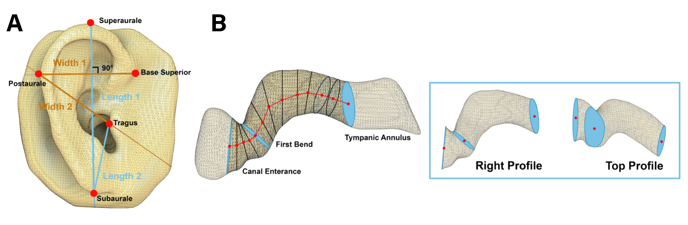
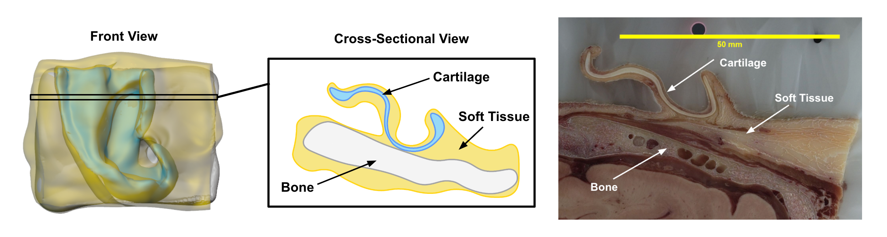
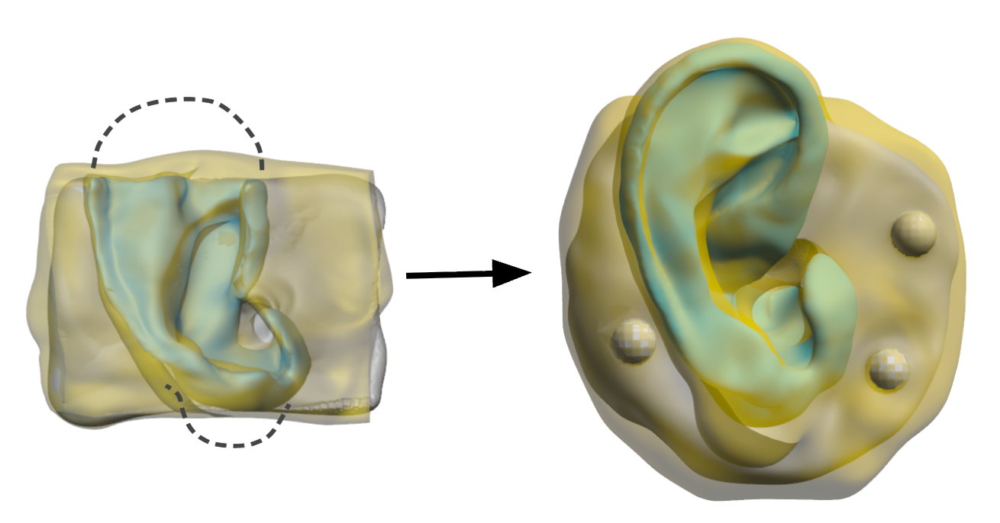
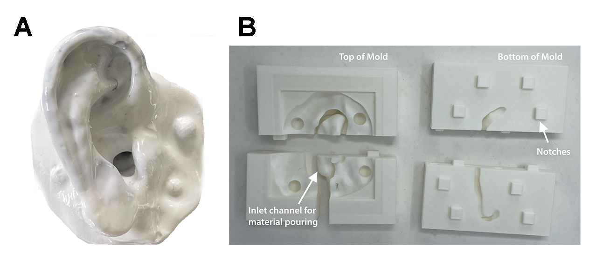
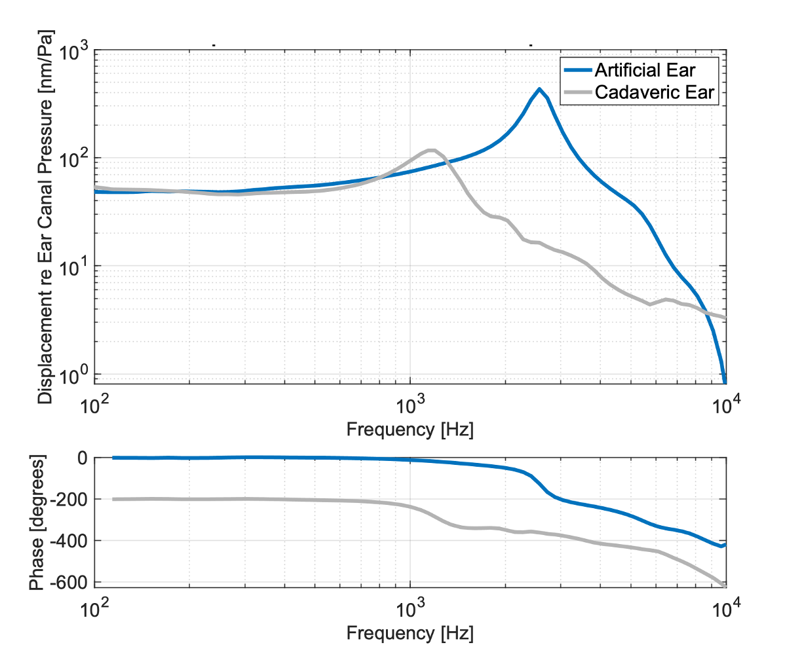
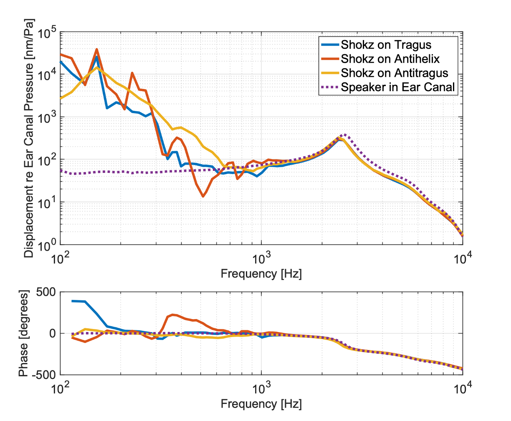
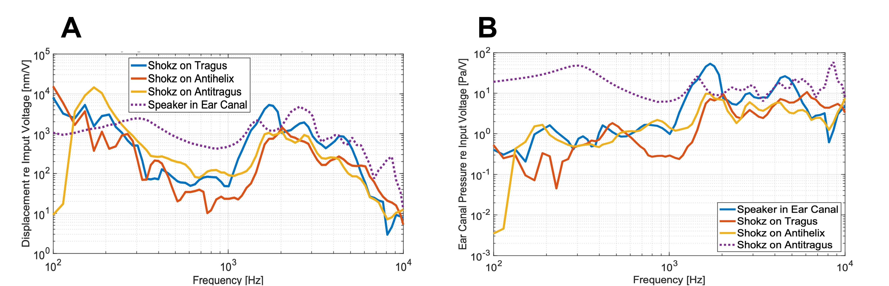

Originally inspired by a personal project building a personal assistant device based in conductive-sound, I became deeply interested in the physical processes at the human interface of such systems.
This curiosity led me to independently seek out experts in the field to better understand cartilage-mediated sound transmission.
With the support of mentors I connected with through this outreach, I developed and initiated a senior thesis project in collaboration with Mass Eye and Ear.
This page summarizes the work of my senior thesis, which explores how cartilage-mediated sound transmission can be physically modeled to evaluate and optimize next-generation cartilage conduction headphones.
ABSTRACT

Cartilage mediated headphones (CMH) are devices that can deliver sound via vibrations
applied directly to the skin overlying cartilaginous surfaces of the outer ear. These
devices typically sit outside of the ear canal, enabling users to enjoy audio without occluding
their ear canals to external sound. However, shortcomings in CMH optimization have
led to unresolved issues, such as sound leakage at high volumes and optimized location to
interface CMH to the outer ear, discouraging wider adaption. Currently, there is no standardized
method for evaluating and comparing these devices that would help advance the
sound pathway.
This project aims to build a physical model of the outer ear capable to objectively simulating
the acoustic transmission of sound from a transducer vibrating the pinna to the resulting
sound pressure at the tympanic membrane. To achieve this, the model replicates the
anatomical geometry and material properties of the outer ear including cartilage, soft tissue,
and bone that compose the pinna and ear canal using a combination of PDMS-MoldMax60
composite, PDMS-Ecoflex50 composite, and Composite-X Resin respectively. The
model integrates all three materials to capture the anatomical morphology and material
properties of the outer ear, with the goal of creating an accessible and reproducible platform
for acoustic testing and research.
DESIGN
Current research on cartilage conduction headphones relies on subjective testing methods, which are often time-consuming, expensive, and difficult to standardize. There is a need for a faster, more accessible alternative method to evaluate different transducers throughout the outer ear, one that can accurately and repeatedly mimic the material and acoustic properties of soft tissue, bone, and intricate cartilage structures of the outer ear. Propagation of sound through a material is primarily determined by its elastic and density properties, which together determine the acoustic impedance and wave velocity[1]. These parameters are critical for our model, which aims to replicate the acoustic and mechanical properties of the outer ear. Based on literature research, we established target values for each anatomical material properties to serve as a performance benchmark for our model.
| Material | Property | Value (Tolerance) | |
|---|---|---|---|
| Soft Tissue | Mechanical | Density ρ | 1.06 (5.2%) g/cm³ [2] |
| Young’s Modulus E | 0.70 (32.6%) MPa [3] | ||
| Acoustic | Speed of Sound c | 1540 (25.7%) m/s [4] | |
| Acoustic Impedance Z | 1.6 (25.0%) MRayl [4] | ||
| Cartilage | Mechanical | Density ρ | 1.10 (2.55%) g/cm³ [5] |
| Young’s Modulus E | 1.60 (71.9%) MPa [6] | ||
| Acoustic | Speed of Sound c | 1639.6 (4.37%) m/s [5] | |
| Acoustic Impedance Z | 2.12 (20.8%) MRayl [7] | ||
| Bone | Mechanical | Density ρ | 1.782 (16.27%) g/cm³ [8] |
| Young’s Modulus E | 9.710 (59.28%) MPa [8] | ||
| Acoustic | Speed of Sound c | 1534 (94.85%) m/s [9] | |
| Acoustic Impedance Z | 2.73 (123.9%) MRayl [9] | ||
The form factor of the model must also replicate the general anatomy of a healthy adult human outer ear, including key structures such as the the pinna and ear canal. To validate the morphology of our model, we established literature measurements of adult ear dimensions to serve as benchmarks for our design.

| Definition | Target (cm) | |
|---|---|---|
| Length 1 | Distance between superaurale and subaurale | 6.91 ± 0.50 |
| Length 2 | Distance between tragus and subaurale | 2.83 ± 0.35 |
| Width 1 | Distance between postaurale and base superior, orthogonal to Length 1 while horizontally parallel to preaurale superior | 3.94 ± 0.32 |
| Width 2 | Distance between tragus and preaurale | 3.51 ± 0.34 |
| Metric | Location | Target (mean) | 95% CI | SD |
|---|---|---|---|---|
| Area (mm²) | Canal Entrance | 97 | 90–104 | ±23.84 |
| First Bend | 53 | 48–58 | ±17.03 | |
| Tympanic Annulus | 56 | 54–59 | ±8.51 | |
| Distance (mm) | Entrance to Bend | 6.0 | 5.4–6.6 | ±2.04 |
| Bend to Annulus | 25.4 | 24.8–26.1 | ±2.21 | |
| Canal Length | 31.4 | 30.5–32.3 | ±3.07 | |
With the dimentional benchmarks established, we next designed the physical model by starting off with a digital rendering of a real human ear. Using images taken of anatomical slices of a frozen human cadaver specimen[12], we reconstructed a 3D model of the outer ear using a segmentation software (Monolith) which included the inner material properties.

Because the image stack omits the top and bottom portions of the outer ear, and the preservation processes applied to the cadaver resulted in morpological distortions, we supplemented the model with a detailed surface geometry of a human ear obtained from a LiDAR scan of a live subject. This surface scan was then aligned and merged with the segmented cadaver model to create a final composite digital model of the outer ear.

MATERIAL SELECTION & FABRICATION
Extensive experimental testing was conducted to identify suitable candidate materials that could replicate the target mechanical and acoustic properties of each anatomical layer.
PDMS-Ecoflex50 composite, PDMS-MoldMax60 composite, and Composite-X Resin (Liqcreate) were selected to replicate soft tissue, cartilage, and bone respectively.
Then, through a series of molding and casting one layer on top of of the next, we were left a 3-layer model pictured below.

RESULTS & DISCUSSION
To evaluate the acoustic performance of the fabricated ear model, we conducted in a sound chamber provided by the Nakajima lab. A nitrile glove membrane was superguled over the tympanic annulus in place of a tympanic membrane. A pair of commercial cartilage conduction headphones (Shokz) were used to transmit sound through the model at a fixed applied static force. Meanwhile, a probe microphone and a laser Doppler vibrometer (LDV) were employed to characterize the resulting acoustic and vibrational responses.

We test the model with the transducers, first evaluated at its baseline performance under normal air conduction as a control, comparing it to previously collected data from a cadaver ear. Along output signals ranging from 0.1–20kHz, we generated using a National Instruments DAQ, system. We measured the magnitude of the tympanic membrane motion normalized by ear-canal pressure across varying frequencies. The results are summarized in the figure below.

Next, we evaluated the transducer performance when placed at three different locations on the outer ear– the tragus, anti-tragus, and anti-helix.
Above approximately 700Hz, the responses closely overlap, indicating that transducer location has minimal impact on eardrum displacement at higher frequencies.
However, at lower frequencies below 700Hz, the Shokz simulation at all locations consistenly produced higher eardrum motion for the same ear-canal pressure.
To further investigate this behavior, we replotted the same data as a function of stimulus voltage for both eardrum displacement and ear-canal pressure.
This representation reveals a clearer trend: above 1kHz, the ear-canal pressures produced by the Shokz and AC speaker are closely matched, whereas below 1kHz,the Shokz conistenly produces lower ear-canal pressures for the same input voltage.
This suggests that at lower frequencies, acoustic coupling through cartilage conduction is less efficient.
The results are summarized in the figure below.


In conclusion, the novel ear model successfully met established mechanical, acoustic, and morphological benchmarks for the outer ear.
Acoustic testing demonstrated that the model can effectively simulate cartilage conduction sound transmission, providing valuable insight into the performance of cartilage mediated sound.
Notably, at low frequencies we observed results suggesting additional transmission pathways that are contributing to tympanic membrane vibration, warrenting further investigation.
These finding highlight the potential of the model not only as a tool for evalutating cartilage conduction headphones, but also as a platform to explore the underlying physics of cartilage conduction.
Future work will focus on refining the model through comparison with cadaveric and human subjects to further improve accuracy and reliability.
Even at this early stage, the model represents an meaningful advancement in the field, offering a low-cost, accessible alternative for testing CMH devices and may accelerate progress in hearing technology research.
While current applications focus on headphone-like devices, the model may also be adapted to explore broader implications across medical, acoustic, and consumer domains.
ACKNOWLEDGEMENTS
This project was conducted under the co-supervision of Nathan Melenbrink, Ph.D., in the Harvard Department of Physics, and Heidi Nakajima, M.D., Ph.D, at Massachusetts Eye and Ear Institute.
REFERENCES
1. I. S. University, “Nondestructive Evaluation Physics: Sound,” 2021.
2. L. Aranda-Lara, E. Torres-Garca, and R. Oros-Pantoja, “Biological tissue modeling with agar gel phantom for radiation dosimetry of 99mtc,” Open Journal of Radiology, vol. 2014, 02 2014.
3. J. Lim, I. Dobrev, C. Rsli, S. Stenfelt, and N. Kim, “Development of a finite element model of a human head including auditory periphery for understanding of boneconducted hearing,” Hearing Research, p. 108337, 08 2021.
4. P. Suetens, “Ultrasound imaging,” Cambridge University Press eBooks, pp. 128–158, 08 2009.
5. C. Baumgartner, P. Hasgall, F. Di Gennaro, E. Neufeld, B. Lloyd, M. Gosselin, and N. Kuster, “Dielectric properties it’is foundation,” 08 2025.
6. M. F. Griffin, Y. Premakumar, A. M. Seifalian, M. Szarko, and P. E. M. Butler, “Biomechanical characterisation of the human auricular cartilages; implications for tissue engineering,” Annals of Biomedical Engineering, vol. 44, p. 34603467, 2016.
7. S. Leicht and K. Raum, “Acoustic impedance changes in cartilage and subchondral bone due to primary arthrosis,” Ultrasonics, vol. 48, pp. 613–620, 11 2008.
8. A. Auperrin, R. Delille, D. Lesueur, K. Bruyre, C. Masson, and P. Draztic, “Geometrical and material parameters to assess the macroscopic mechanical behaviour of fresh cranial bone samples,” Journal of Biomechanics, vol. 47, pp. 1180–1185, 01 2014.
9. C. W. Connor, G. T. Clement, and K. Hynynen, “A unified model for the speed of sound in cranial bone based on genetic algorithm optimization,” Physics in Medicine and Biology, vol. 47, pp. 3925–3944, 10 2002.
10. B. Schulz, M. Thali, R. Kubik-Huch, and T. Niemann, ’Auricular dimensions in computed-tomography: Unveiling the relationship between ear dimensions, age, and sex using three-dimensional volume rendering reconstructions,’ World Journal of Radiology, vol. 16, pp. 760– 770, 12 2024.
11. A. P. Balouch, K. Bekhazi, H. E. Durkee, R. M. Farrar, M. Sok, D. H. Keefe, A. K. Remenschneider, N. J. Horton, and S. E. Voss, ’Measurements of ear-canal geometry from high-resolution ct scans of human adult ears,’ Hearing Research, vol. 434, pp. 108782–108782, 04 2023.
12.H. Wang, S. Merchant, and M. Sorensen, ’A downloadable three-dimensional virtual model of the visible ear,’ ORL; journal for oto-rhino-laryngology and its related specialties, vol. 69, pp. 63–7, 02 2007.